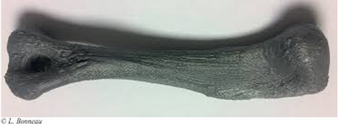
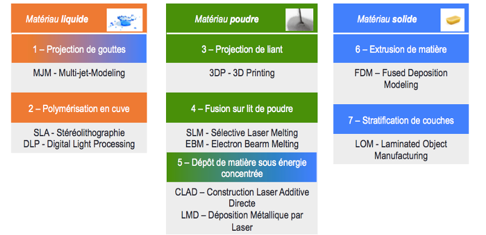
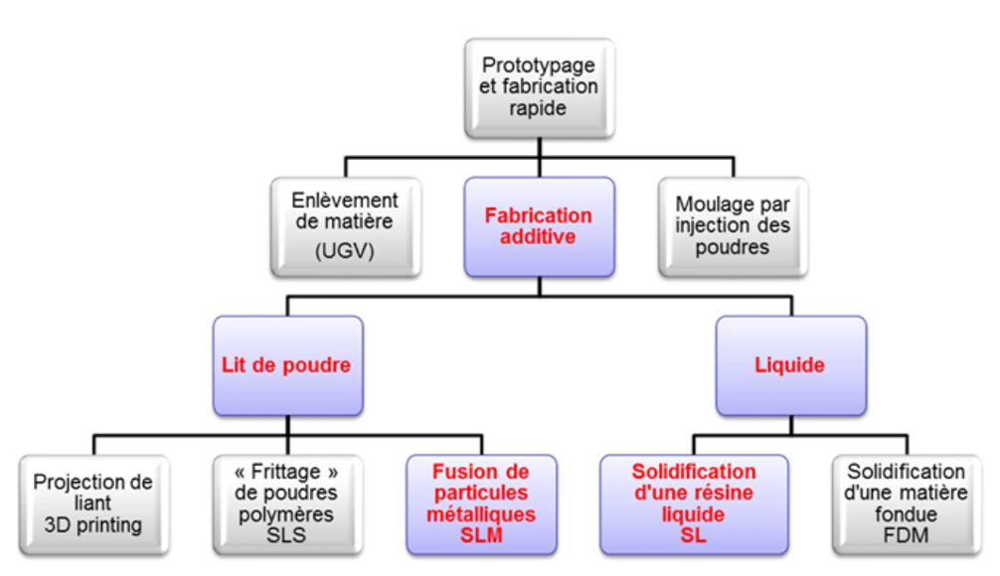

Principe
L’impression 3D ou fabrication additive regroupe l’ensemble des procédés de fabrication de pièces en volume par ajout ou agglomération de matière par empilement de couches successives.
Créer un objet en 3 dimension avec une imprimante spéciale à partir d’un fichier ou plan numérique. En usinage conventionnel, la matière est retirée pour former l’objet. Dans la fabrication additive des couches successives sont empilées pour créer l’objet.
Les Contraintes
Selon le procédé utilisé (ex. présence de supports, traitement de surface etc…)
Selon le matériau utilisé (ex. états de surface – adaptabilité du matériau à l’usage etc…)
Selon la conception réalisée (ex. optimisation , tests numériques de résistance, expertise ingénierie etc…)
Selon l’usage et les contraintes attendues sur le produit fini
-
impact du procédé – précision – exactitude - tolérance
-
impact du matériau – rendu – précision – comportements biomécaniques - biocompatibilité
-
impact de la conception - acquisition
-
impact fonctionnalité du produit

Pour un produit selon les critères demandés le choix de l’acquisition, conception, matériau et procédé doit être adapté.
Cela demande un travail de fond collaboratif entre les praticiens utilisateurs et les ingénieurs et experts du secteur de l’impression 3D.
Classification
Classification en 7 familles (norme ISO 17296-2)
-
Polymérisation résine par laser SLA
-
Projection de gouttes de matériau
-
Projection liant sur un substrat
-
Solidification de poudre sous source d'énergie moyenne à forte puissance
-
Projection de poudre dans un flux d'énergie
-
Extrusion de matière
-
Assemblages de couches à partir de feuilles, plaques


Les Matériaux
Les plastiques
-
ABS – Acrylonitrile Butadiène Styrène Exemple
-
PLA – Acide PolyLactique matières renouvelables biodégradable Exemple
-
ASA – Polystryrène Exemple
-
PET - Polytéréphtalate d’éthylène Exemple
-
PC – PolyCarbonate Exemple
-
PEEK – Polyétheréthercétone Exemple
-
PP – Polypropylène Nylon® Exemple
-
PVC Exemple
-
Le développement des matériaux Exemple
Les métaux
-
Acier – inoxydable médical et chirurgical Exemple
-
Titane – alliages Exemple
-
Aluminium – souvent sous forme d’alliage Exemple
-
Chrome-Cobalt Exemple
-
Métaux précieux – Or Argent Bronze … Exemple
-
Les céramiques alumine, zircone, hydroxyapatite (HAP), TCP Exemple
-
Le silicone Exemple
-
Les composites Exemple
-
Le bio – printing – peau et os Exemple
La CAO
Quoi – planification chirurgicale – conception de matériel médical – optimisation de l’objet – Avoir le bon fichier à imprimer pour un résultat optimisé.
Logiciels – gratuits – payants – professionnels
Tout dépend de votre besoin, de l’application/l’usage du produit final et de votre disponibilité
Plus vous participerez aux projets d’Instinct’iv plus nous développerons une offre et une expertise pour répondre au mieux des besoins des vétérinaires.
Faire converger les expertises médicales et chirurgicales des vétérinaires et celles de l’ingénierie de l’impression 3D c’est permettre à ce secteur de développer des solutions qui lui sont propres.
La conception assistée par ordinateur, plus communément appelée CAO regroupe l’ensemble des logiciels de modélisation permettant de concevoir des modèles numériques en 3D. Dans le cadre de l’impression 3D, la CAO permet, à l’aide d’un fichier numérique de type STL ou autre, de demander à l’imprimante 3D de réaliser des pièces physiques. Ainsi, cela offre une lisibilité du fonctionnement et du rendu d’un produit avant qu’il ne soit conçu.
Il reste néanmoins quelques détails à savoir impérativement avant de commencer.
-
Il existe différents types de logiciels pour le secteur médical, tout dépend de ce que vous avez prévus de faire. Votre but est-il d’imprimer en 3D ou d’obtenir un modèle 3D pour une meilleure visualisation ? Peut-être les deux ?
-
Avant d’utiliser un logiciel de modélisation 3D, vous devez faire attention au format du fichier que vous souhaitez importer. La plupart du temps, les scans sont au format DICOM, un format qui n’est pas reconnu par la plupart des logiciels de modélisation 3D. Cela ne veut pas dire que vous ne pouvez pas utiliser un logiciel de modélisation traditionnel pour vos impression 3D médicales. Il vous faudra simplement utiliser un autre logiciel afin de convertir votre fichier au bon format.
-
Votre choix doit être guidé par les spécificités de votre processus de travail et les objectifs de votre projet. Les facteurs à considérer sont les suivants : Le nombre de pièces à imprimer par semaine - Les matériaux nécessaires - La fonction des pièces : prototype visuel, fonctionnel, technique ? - Le nombre de pièces par impression
-
pour vous faire une idée plus précise des capacités des imprimantes. Demandez des informations sur la durée d'impression, la quantité de matériau nécessaire ou encore l'épaisseur des couches.
-
Calculez les coûts, estimez l'usage de la machine, la durée d'impression d'une pièce
-
Participez à des événements organisés par les fournisseurs et les sous-traitants, pour connaître les contrats de service et le coût total de possession des machines
Applications médicales
Des besoins spécifiques – biocompatibilité – ingénierie biomécanique
Précisions – connaissance anatomiques et comportements des tissus
Stérilisation – radio opaque ou radio transparents – etc…
Impression 3D vétérinaire
Dans le monde – principalement anglosaxon – Etats Unis et Royaume Uni – Se développe l’Italie et autres pays d’Europe
Logiciels planifications et services d’impression
Cas cliniques
Un marché
En France – Instinct’iv est le premier interlocuteur dédié aux vétérinaires qui apporte des solutions en impression 3D
Instinct’iv investit dans les projets de développement des praticiens
Organisation et priorisation de la demande des vétérinaires pour être au plus proche de leurs besoins
Itérations des besoins et pratiques – développement d’une expertise vétérinaire en collaboration avec les praticiens
Des besoins spécifiques – biocompatibilité – ingénierie biomécanique
Précisions – connaissance anatomiques et comportements des tissus
Stérilisation – radio opaque ou radio transparents – etc…
Les besoins de la médecine Humaine mais aussi des besoins spécifiques
Economiques – Volumes – Réactivité – disponibilité du scanner et du matériel spécifique
C’est en commençant à travailler ensemble que nous trouverons des réponses aux problématiques spécifiques de ce secteur.
Trouver des solutions en partageant les problématiques
Réglementation et marché
L’impression 3D comme tout procédé industriel est réglementé sur l’ensemble de sa chaine de valeur.
L’usage de l’impression 3D en milieu médical que ce soit pour de la simulation ou de la production de DM est soumise à réglementation.
La notion de DM en milieu vétérinaire ne s’applique pas – de même que la réglementation qui s’y rattache. Ce qui permet une grande liberté de développement et d’usage mais qui peut aussi être risqué pour le praticien.
Instinct’iv a choisi comme partenaires des professionnels de l’impression 3D médicale certifié ISO 13485. Ceci afin de profiter de l’expertise du secteur médical tout en gardant une flexibilité de développement.